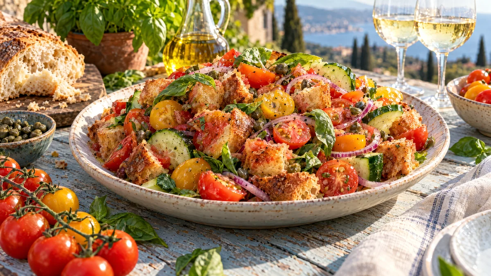

RESTFEST · RECEPTSallad · Tillbehör
Panzanella på gammalt bröd med tomater, gurka och kapris
Gårdagens bröd, en ask körsbärstomater och en halv gurka. Brödet rostas till gyllene krutonger som suger upp tomatsaft, olivolja och vinäger tills de är krispiga utanpå och saftiga inuti. Rödlök, kapris och basilika gör resten. En toskansk sommarsallad som går att göra året om.
- Förberedelse
- 20 min + 15 min dragtid
- Tillagning
- 10 min
- Portioner
- 4 som tillbehör, 2 som lunch
- Nivå
- Nybörjare
 Det här behöver du
Det här behöver du
JÄMFÖRT MED DIN KYL
Tryck på + vid det du behöver köpa.
Krutonger
Sallad
Dressing
Gör så här
- Sätt ugnen på 200 grader. Riv eller skär brödet i bitar, ca 3 cm. Rivna kanter blir krispigare än skurna.
- Vänd brödet i olivolja och salt på en plåt. Rosta i mitten av ugnen i 8–10 minuter, tills bitarna är gyllene och krispiga på ytan.
- Dela tomaterna och lägg dem i en stor skål. Strö över saltet och låt stå i 10 minuter. Saltet drar ut saften, som blir en del av dressingen.
- Dela gurkan på längden, skrapa ur kärnorna med en tesked och skär den i halvmånar. Skiva rödlöken tunt och lägg den i kallt vatten i 5 minuter, så blir smaken mildare.
- Vispa ihop olivolja, vinäger, vitlök, senap och peppar.
- Häll dressingen över tomaterna. Vänd ner brödet, gurkan, den avrunna löken och kaprisen. Låt salladen dra i 10–15 minuter, så att brödet suger upp saften men har lite krispighet kvar.
- Riv basilikabladen och vänd ner dem precis före servering.
Dekoration och servering
- Lägg upp salladen på ett stort, flatt fat så att tomaterna i olika färger syns.
- Toppa med några hela basilikablad och ringla över lite extra olivolja.
- Avsluta med flingsalt och nymald svartpeppar.
- Servera inom en halvtimme, sedan blir brödet för mjukt.
- Vänd ner en burk sköljda vita bönor eller kikärtor för en mättande lunch.
Mått och ugnstemperaturer
Måtten är svenska (dl, msk, tsk, krm). Ugnstemperaturerna gäller vanlig ugn med över- och undervärme; med varmluft, sänk med 20 grader.